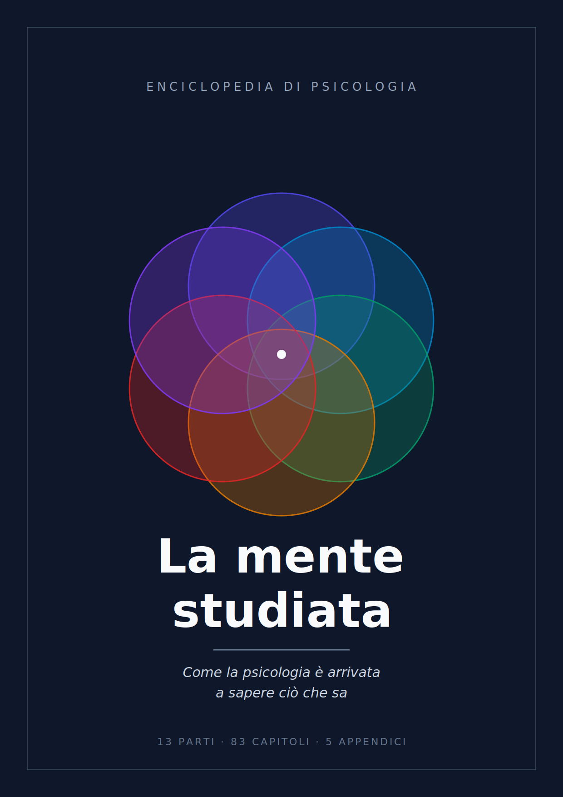

Biblioteca
Due libri da leggere. Il tema chiaro, scuro o base vale per entrambi.

Il Profeta · The Prophet · Le Prophète
Ventotto prose poetiche, con le illustrazioni dell'edizione originale. Si legge in italiano, inglese e francese.
Auto segue il tema del dispositivo. Base è lo stile semplice originale, senza barra laterale.
Due libri da leggere. Il tema chiaro, scuro o base vale per entrambi.

Ventotto prose poetiche, con le illustrazioni dell'edizione originale. Si legge in italiano, inglese e francese.